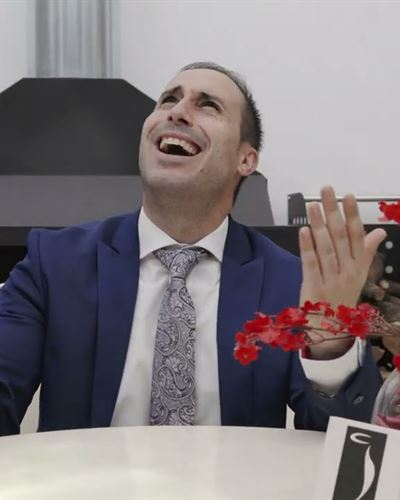
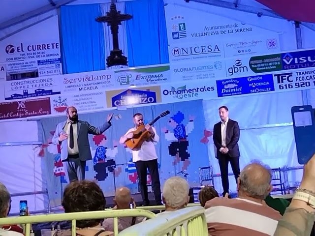
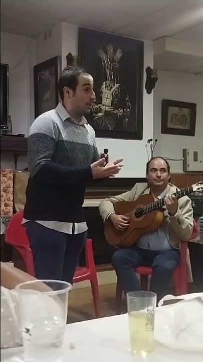
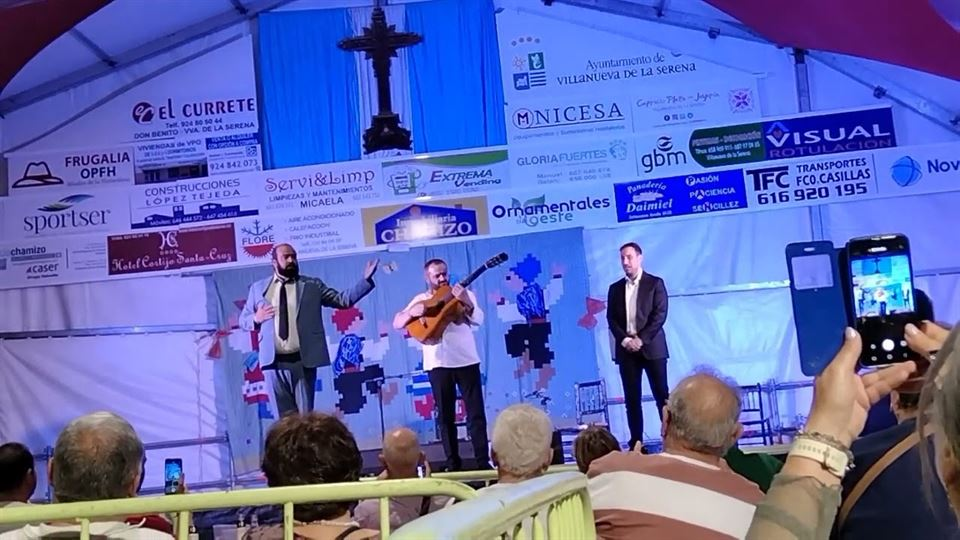

01
Cante y guitarra
Recital flamenco
En sus actuaciones con guitarra, Manuel Cribaño ha interpretado fandangos, tangos, soleás, malagueñas, colombianas y otros cantes.
Escucha una actuación completa para conocer su trabajo en directo.
Peñaflor · Sevilla
Cantaor de flamenco y copla de Peñaflor, Sevilla. «Empecé a cantar fandangos en mi pueblo. Aquí puedes escuchar mi música, ver actuaciones en directo y consultar las próximas fechas.»

Vídeo destacado
Marianas · Videoclip
Con Javi Santiago y Tamara Vargas
Biografía · Manuel Cribaño Plaza
Manuel Cribaño Plaza nació en Peñaflor (Sevilla), donde empezó a cantar con ocho años. De niño escuchaba las cintas de fandangos que había dejado su abuelo Pedro. Cantó en casa, en el colegio y en las fiestas de su pueblo. A los once años ya había actuado en televisión.
Su recorrido por las peñas flamencas de la comarca lo llevó a festivales andaluces. En 2019 obtuvo el segundo puesto en el concurso de fandangos organizado por la Peña Flamenca José Mercé en Chipiona (Cádiz).
La copla también forma parte de su trayectoria. Participó en Se llama copla y, en 2024, presentó en Tierra de talento unas colombinas y una interpretación de «El Cristo de los Faroles».
En 2025 publicó el videoclip «Marianas» con Javi Santiago a la guitarra y Tamara Vargas en los coros. En 2026, el Circuito Andaluz de Peñas lo programó en Martos (Jaén) y Lentejí (Granada).
Empezó a cantar con ocho años, con las cintas de fandangos de su abuelo Pedro.
Concurso de fandangos de la Peña Flamenca José Mercé, en Chipiona (Cádiz).
Se llama copla y Tierra de talento, con «El Cristo de los Faroles».
Peñas y festivales de Sevilla, Córdoba, Jaén, Granada y Málaga, y de Badajoz.
Actuaciones
En esta selección puedes escuchar a Manuel Cribaño en directo y conocer su repertorio a través de actuaciones en peñas y festivales. Para programar una actuación, consulta la disponibilidad e indica el lugar y la fecha del evento.
Cante y guitarra
En sus actuaciones con guitarra, Manuel Cribaño ha interpretado fandangos, tangos, soleás, malagueñas, colombianas y otros cantes.
Escucha una actuación completa para conocer su trabajo en directo.
Desde «Se llama copla»
La copla acompaña la trayectoria de El Niño de Peñaflor desde su paso por Se llama copla.
En Tierra de talento interpretó «El Cristo de los Faroles» y Canal Sur anunció «El emigrante», de Juanito Valderrama, para la fase de desafíos.

03Programadores
Del Circuito Andaluz de Peñas a las noches flamencas de Extremadura: Martos, Lentejí, Palma del Río, Peligros, Don Benito o Villanueva de la Serena.
Indica el recinto, la fecha y el programa del ciclo para preparar la propuesta.

Programación Peñas · festivales · ciclos
Para consultar la disponibilidad de Manuel Cribaño, indica la fecha, la localidad y el tipo de evento. Si ya tienes el recinto o el programa, puedes incluirlos en tu mensaje.
¿Preparas una programación flamenca?
Cuéntame dónde y cuándo tendrá lugar
Repertorio
Fandangos, soleás, tangos, malagueñas, marianas, milongas, saetas y copla, grabados en peñas, festivales y televisión. Toca un cante para escucharlo.
Trayectoria
Los hitos de su recorrido, de las cintas de su abuelo a las peñas, los concursos y la televisión.

¿Estás preparando una programación flamenca?
Cuéntame dónde y cuándo tendrá lugar. Así podremos hablar del recital y de lo que necesita tu evento.
Consultar disponibilidadEscucha & siente
Escucha las grabaciones de Manuel Cribaño y recorre su trabajo en directo, desde los fandangos hasta las actuaciones en peñas, festivales y televisión.
Grabaciones
Fotografías
Agenda flamenca
Consulta aquí las fechas anunciadas, los recintos y la información de acceso de cada actuación.
Archivo
Para medios y entidades organizadoras
Manuel Cribaño Plaza, conocido como El Niño de Peñaflor, es cantaor de flamenco y copla. Natural de Peñaflor (Sevilla), empezó a cantar fandangos de niño y ha llevado su cante a peñas, festivales y programas de Canal Sur.
Biografía, fotografías y vídeos de Manuel Cribaño para medios y entidades organizadoras. Para solicitar una entrevista o material adicional, utiliza el contacto de esta página.
En los medios
Fotografías en alta resolución, créditos y condiciones de uso bajo petición.
Preguntas frecuentes
Escribe desde el formulario de contacto o al correo de contratación indicando la fecha, la localidad, el recinto y el tipo de evento. Si ya tienes el programa del ciclo, inclúyelo en tu mensaje.
Fandangos, soleás, tangos, malagueñas, marianas, milongas y saetas, además de copla. En la sección Cantes puedes escuchar cada uno.
Sí. Además de peñas y festivales andaluces, ha actuado en Extremadura, en localidades como Don Benito, Villanueva de la Serena y Monesterio. Consulta la disponibilidad para tu localidad.
Sus recitales son de cante y guitarra; le han acompañado guitarristas como Javi Santiago o Juan Manuel Cadenas «El Chino». La formación se confirma en cada propuesta.
Depende del formato, la duración, el lugar y las necesidades técnicas del evento. Indica esos datos en tu consulta para recibir una propuesta.
En Prensa y materiales tienes la biografía breve, la grafía del nombre y enlaces a entrevistas y vídeos. Las fotografías en alta resolución se envían bajo petición.
Contratación y contacto
Para consultar la disponibilidad de Manuel Cribaño, indica la fecha, la localidad y el tipo de evento. Si ya tienes el recinto o el programa, puedes incluirlos en tu mensaje.
Incluye en tu mensaje
Fecha prevista (o «por definir»), localidad y recinto, tipo de evento y, si lo tienes, el programa del ciclo.